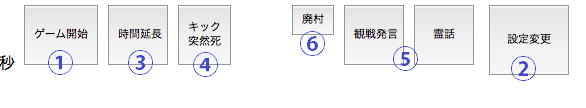

GM(仮GM)として入村すると、情報ウィンドウの代わりにGM用のメニューが表示されます。

①ゲーム開始ボタン
フェーズが事件前の時に、参加者数が設定人数になると表示されます。
ゲームを開始して、フェーズが 1日目 夜 になります。
②設定変更ボタン
村の時間設定・オプション変更する画面を表示します。
一部オプション(GM制・トリップ有りのみ入村)は村建て後には変更できません。

③時間延長ボタン
事件前:残り時間を延長します。
(残り時間が0になると、廃村になります)
・残り時間が300秒以下、5秒以上の時に有効です。
夕方/明け方:残り時間を延長します。
・残り時間が60秒以下、5秒以上の時に有効です。
④キック/突然死ボタン
キック/突然死メニューを開きます
使い方は投票/能力実行と同じです。
事件前に使うと、該当プレイヤーを村から追放します。
ゲーム開始後に使うと、該当プレイヤーを死亡状態にします。
⑤観戦発言・霊話ボタン
それぞれ、観戦者・死亡者(霊話)のみに見える発言をします。
⑥廃村ボタン
事件前でのみ表示されます。
その村を廃村にします。廃村した村は過去ログに残りません。